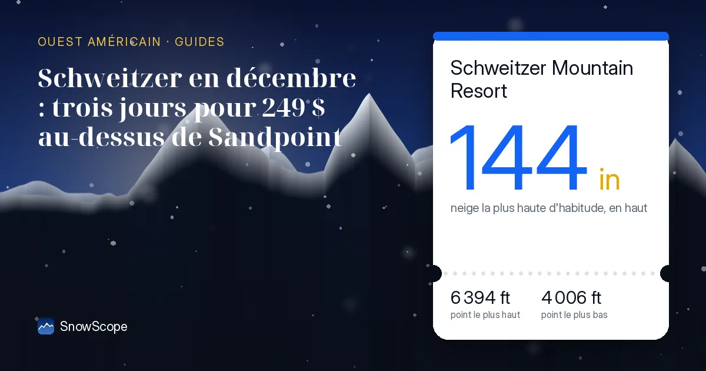

Schweitzer en décembre : trois jours pour 249 $ au-dessus de Sandpoint
Schweitzer est une grande montagne avec une base de petite ville : Sandpoint et le lac Pend Oreille en bas, une longue crête de remontées en haut. Pour un voyage de décembre, son 3-Pack à 249 $ pour l'hiver 2026/2027 rapproche un week-end en station d'un budget de petite colline.
Consultez les prévisions neige en temps réel pour Schweitzer Mountain Resort sur l'application SnowScopeHauteurs de neige, alertes poudreuse et carte 3D, gratuitement.
Du lac à la crête
Sur notre cartographie, Schweitzer a 10 remontées et environ 46 mi (74 km) de pistes, d'environ 4 010 pieds (1 221 m) jusqu'à 6 390 pieds (1 949 m). Cette amplitude d'altitude explique son décembre : la base et le sommet vivent dans des hivers différents pendant une bonne partie du mois.

Le 3-Pack, en clair
Le 3-Pack donne trois jours de ski pour 249 $ et n'est valable que pour l'hiver 2026/2027. La station elle-même chiffre cela à 83 $ par jour. Nous n'avons pas pu lire de prix guichet journée complète sur son site, donc nous comparons avec le pack plutôt qu'avec un ticket unique.
Trois jours correspondent aussi bien à la neige : vous n'avez pas à tout jouer sur une seule date de décembre.

Un grand écart entre le bas et le haut
Un 15 décembre type, la base a 22 in (55 cm), la mi-montagne vers 5 200 pieds (1 585 m) 35 in (90 cm), et le sommet 54 in (138 cm). Au jour de Noël, le sommet atteint 60 in (152 cm) et la mi-montagne 43 in (109 cm).
Les chances à mi-montagne sont solides : 85 % des hivers avaient 20 in (50 cm) ou plus le 15 décembre et 98 % au 25 décembre. La part des semaines à bonne neige y passe de 72 % la première semaine de décembre à 98 % la semaine de Noël. La neige durable arrive typiquement à mi-montagne début novembre, plus tard que dans les stations des Rocheuses.
Comparé à Lookout Pass et Brundage
Lookout Pass, à l'est sur l'I-90 à la frontière du Montana, facture 63 $ en semaine avec réservation et avait 30 in (75 cm) à mi-montagne un 15 décembre type. Brundage, loin au sud près de McCall, démarre ses tickets dynamiques à 65 $ certains jours et avait 30 in (77 cm).
Schweitzer coûte plus par jour que leurs tickets les moins chers, mais elle a la neige la plus profonde en haut de montagne des trois et bien plus de terrain.
Avant et maintenant, et l'hiver dernier
La mi-montagne avait 41 in (104 cm) un 15 décembre type sur les 15 premiers hivers de notre historique, et chaque hiver dépassait 20 in ; sur les 15 derniers hivers, c'était 32 in (80 cm) et 73 %. L'hiver dernier était très maigre à cette date, avec 6 in (16 cm) à mi-montagne. Un pack de trois jours permet d'attendre les bons jours.
Conseils aux skieurs
- Achetez le 3-Pack avant le voyage et répartissez les jours sur la seconde moitié de décembre.
- La route de montagne depuis Sandpoint est raide : prenez des chaînes ou utilisez des pneus neige.
- Début décembre, montez vers les remontées du haut : la base peut être mince.
- Le brouillard et les nuages bas sont fréquents ici : des lunettes à verre faible luminosité aident.
Références et crédits
- Schweitzer, lift ticket 3-Pack 2026/2027 (official) www.schweitzer.com/plan-your-trip/deals-and-packages/lift-ticket-3pack
- Lookout Pass, lift tickets 2026-2027 (official) skilookout.com/lift-tickets/
- Brundage Mountain, daily lift tickets (official) brundage.com/daily-lift-tickets/
- OpenSkiMap (mapped lifts and runs) openskimap.org/
- avalanche.org, US avalanche centers and forecasts avalanche.org/
À propos de ces chiffres
Chiffres de neige : historique SnowScope, 46 hivers passés (1980-81 à 2025-26) aux altitudes indiquées (bas, mi-pente, sommet), une reconstitution de la neige passée pour une zone, corrigée de l'altitude (base ERA5-Land ; Snow_Hydro 1 km pour le Maroc), pas les bulletins de la station. Neige actuelle : la carte SnowScope. Remontées, pistes et altitudes : cartographie OpenSkiMap. Prix : les pages officielles listées ci-dessous, consultées le 13 novembre 2026 ; les prix dynamiques varient avec la date et la demande.
Bulletins d'avalanche officiels: avalanche.org (US national portal)
Citer ce bulletin
Pour la recherche, l'enseignement ou la presse : chiffres et graphiques réutilisables librement sous CC BY 4.0 avec cette citation.
SnowScope (2026), Schweitzer en décembre : trois jours pour 249 $ au-dessus de Sandpoint, https://snowscope.app/blog/fr/2026/11/schweitzer-sandpoint-december-3-pack-deal.html, consulté le 2026-11-14
SnowScope (Atlas Labs). (2026, November 14). Schweitzer en décembre : trois jours pour 249 $ au-dessus de Sandpoint. SnowScope snow reports. https://snowscope.app/blog/fr/2026/11/schweitzer-sandpoint-december-3-pack-deal.html
BibTeX
@misc{snowscope2026schweitzersandpointdecem,
author = {{SnowScope (Atlas Labs)}},
title = {Schweitzer en décembre : trois jours pour 249 $ au-dessus de Sandpoint},
year = {2026},
month = nov,
howpublished = {\url{https://snowscope.app/blog/fr/2026/11/schweitzer-sandpoint-december-3-pack-deal.html}},
note = {Published 2026-11-14 20:57 UTC; accessed 2026-11-14}
}· CC BY 4.0 · Méthodes, données et outils →
Suivre Schweitzer Mountain Resort
Gratuit : un message quand la neige arrive, et la météo chaque matin.